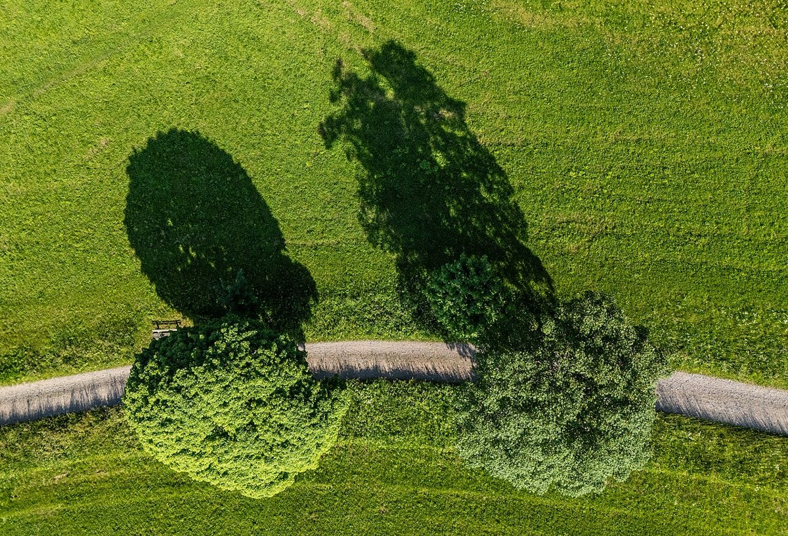

Der Schwarzwald - Natur, Kultur und Kulinarik im Herzen Deutschlands

Der Schwarzwald, Deutschlands bekanntestes Mittelgebirge, ist ein Paradies für Naturliebhaber, Kulturinteressierte und Genießer. Mit seinen dichten Wäldern, malerischen Dörfern und traditionellen Spezialitäten lockt die Region jedes Jahr zahlreiche Besucher an. Hier erfährst du, wie du den Schwarzwald am besten erkundest.
Anreise in den Schwarzwald
Der Schwarzwald ist gut an das deutsche Verkehrsnetz angebunden. Mit dem Auto erreichst du die Region über die Autobahnen A5 und A81. Wer lieber öffentliche Verkehrsmittel nutzt, kann mit der Bahn bis nach Freiburg, Baden-Baden oder Offenburg fahren. Von dort aus gibt es zahlreiche Regionalzüge und Busse, die dich in die verschiedenen Teile des Schwarzwaldes bringen.
Beste Reisezeit
Der Schwarzwald ist ganzjährig ein attraktives Reiseziel. Im Sommer läd die Region mit milden Temperaturen und langen Tagen zu Wanderungen und Radtouren ein. Der Herbst verzaubert mit goldenen Wäldern, während der Winter mit verschneiten Landschaften und gemütlichen Weihnachtsmärkten lockt. Frühling bietet frisches Grün und blühende Wiesen, perfekt für Naturliebhaber.
Top Highlights im Schwarzwald
- Titisee: Der malerische See ist ideal für Wassersport, Spaziergänge oder einfach nur zum Entspannen. Im Winter kannst du hier sogar Schlittschuh laufen.
- Triberger Wasserfälle: Die höchsten Wasserfälle Deutschlands sind ein echtes Naturwunder. Ein Wanderweg führt dich durch die beeindruckende Schlucht.
- Triberg: Neben den Wasserfällen ist Triberg bekannt für seine Kuckucksuhren. Besuche eine Werkstatt und erfahre mehr über die traditionelle Handwerkskunst.
- Feldberg: Der höchste Gipfel im Schwarzwald bietet atemberaubende Aussichtspunkte und ist ein Paradies für Wanderer und Skifahrer.
- Baden-Baden: Diese elegante Kurstadt ist berühmt für ihre Thermalbäder und das mondäne Casino. Ein Besuch hier ist pure Entspannung.
Kulinarische Highlights
Der Schwarzwald ist auch für seine köstliche Küche bekannt. Probiere unbedingt die Schwarzwälder Kirschtorte, eine weltberühmte Süßspeise. Ebenso beliebt ist der Schwarzwälder Schinken, der geräuchert oder luftgetrocknet serviert wird. In vielen Restaurants findest du traditionelle Gerichte wie Räss Brägele (Bratkartoffeln mit Speck) oder Maultaschen, eine schwäbische Spezialität. Ein Glas Badischer Wein oder ein Schwarzmann (ein lokales Bier) rundet das kulinarische Erlebnis perfekt ab.
Abschließende Tipps
Der Schwarzwald ist ein vielseitiges Reiseziel, das für jeden etwas bietet. Plane genug Zeit ein, um die Region in Ruhe zu erkunden, und vergiss nicht, bequemes Schuhwerk für Wanderungen mitzubringen. Egal ob du Natur, Kultur oder Kulinarik suchst – der Schwarzwald wird dich begeistern.
Haiktec
- Baustellen-Material- & Arbeitszeit-Tracker für Handwerksbetriebe
- Abenteuer im Traumland: 7 zauberhafte Gute-Nacht-Geschichten für Kinder von 3-8 Jahren
- Umzugskosten-Tracker & Renovierungsplaner für Selbstständige
Text mit KI erstellt und automatisch geprueft.